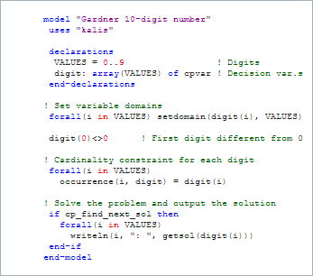

Xpress-Kalis를 사용하면 Mosel 모듈 Kalis에서 Artelys Kalis 제약 해법에 액세스할 수 있습니다. Xpress-Kalis 소프트웨어는 Artelys 회사가 소유하고 개발하고 있습니다. Xpress-Kalis를 사용하면 Kalis의 Constraint Programming 기능을 Mosel 환경에서 사용 가능하며, 사용자는 Constraint Programming (CP) 모델을 Mosel 언어로 공식화하고 해결할 수 있습니다. Mosel IO 드라이버를 사용하여 메모리에 데이터를 전송하거나 또는 mmodbc 모듈을 통해 데이터베이스에 ODBC 액세스를 하는 등 Kalis는 Mosel 환경의 기능을 다루는 모든 데이터를 사용할 수 있습니다.

기능
Xpress-Kalis는 표준 선형 제약 이외에 'all-different', 'element', 'occurrence', 'equivalence' 및 'implication' 등의 유한 영역의 변수에 대한 특정 수의 이른바 글로벌 제약 관계를 정의합니다. 또한 제약 조건과 논리 표현 (예를 들면, 분리 를 설명하는 것 등)과 결합도 가능합니다.
제약 조건 처리: 제약은 자동으로 또는 사용자의 명확한 요청에 의해 사용하기 때문에 다양한 수준의 양방향성의 모델을 사용할 수 있습니다.
Kalis 특유의 장점은 열거 전략을 유연하게 정의할 수 있습니다. 사용자는 다양한 옵션 중에서 분기 계획 (탐색 트리의 모양을 결정)을 선택하고 내장된 변수 값 추출 전략의 조합을 내장된 근사값 결정 모듈에 의해 정의합니다.
Xpress-IVE 의한 표시
비주얼 개발 환경인 Xpress-IVE 는 CP 탐색 트리 와 CP 통계 창의 그래프 등 다양한 표현에 의한 CP 모델 개발 및 분석을 지원하고 있습니다. 물론, IVE의 표준 기능 (예: 검색 가능한 엔터티 표시, 구문 강조, 디버거 등)는 동일하게 사용할 수 있습니다.
해법을 결합
Mosel 언어는 다른 해법을 결합 플랫폼으로 사용할 수 있습니다. 특히 Xpress- Kalis에 Xpress-Optimizer를 결합하면 CP와 LP / MIP에 의한 문제 해결이 가능 합니다.